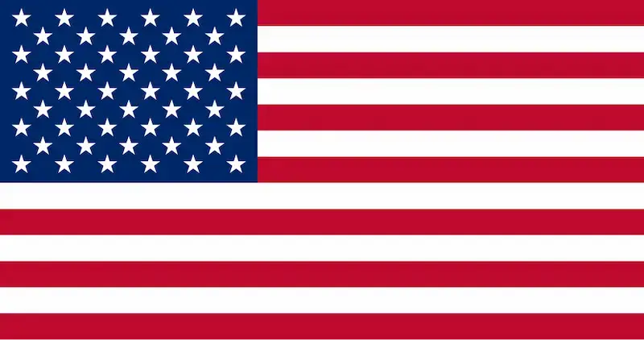

Joshua Ruth
About Me

I am Joshua Ruth. I paint miniatures, draw pictures, learn history, collect nerf guns, and play video games. I want to become an indie video game maker who creates my own art and do my own animations and stuff. I am the second oldest child of 4. My family owns 5 pets which consist of 4 cats and 1 dog. I currently still live at the house I grew up in.
Where I'm from
I live in the United States of America in the state of Utah. The US a pretty nice place to live. (Apart from stupid stuff like politicians, big business, ect). I live near lots of places where I can go rock hounding. So far I have found quartz, lavarocks, and wonderstone.